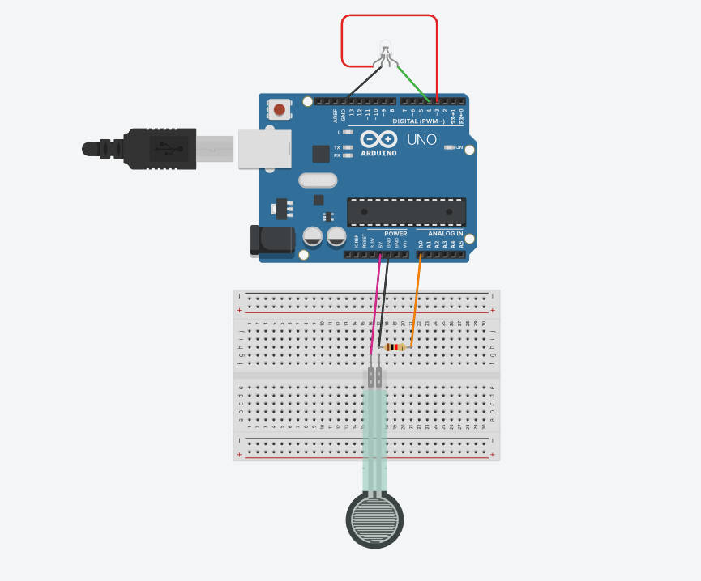

Stress visualization program
1-Project introduction
The light bulb is first connected to the circuit board, and then the FSR pressure sensor is also connected,
so that the color of the light bulb can be changed by the pressure of the sensor through the ardunio program.
2-Code
//2024.5.27 by JinXuan
// Define the pins connected to Arduino
const int sensorPin = A0; // Pressure sensor connected to A0
const int redLEDpin = 3; // Red LED connected to D3
const int greenLEDpin = 4; // Green LED connected to D4
// Define thresholds
const int lowThreshold = 70; // Low pressure threshold
const int highThreshold = 80; // High pressure threshold
void setup() {
Serial.begin(9600); // Initialize serial communication
pinMode(sensorPin, INPUT); // Set pressure sensor pin as input
pinMode(switchPin, INPUT_PULLUP); // Set switch pin as input and enable internal pull-up resistor
pinMode(redLEDpin, OUTPUT); // Set red LED pin as output
pinMode(greenLEDpin, OUTPUT); // Set green LED pin as output
}
void loop() {
// Read the analog value of the pressure sensor
int sensorValue = analogRead(sensorPin);
if (sensorValue < lowThreshold) {
digitalWrite(greenLEDpin, HIGH); // Turn on green LED
digitalWrite(redLEDpin, LOW); // Turn off red LED
} else if (sensorValue > highThreshold) {
digitalWrite(greenLEDpin, LOW); // Turn off green LED
digitalWrite(redLEDpin, HIGH); // Turn on red LED
}
// To avoid high CPU usage, add a short delay here
delay(50);
}
3-Circuit diagram
4-Physical connection mode

5-Effect display